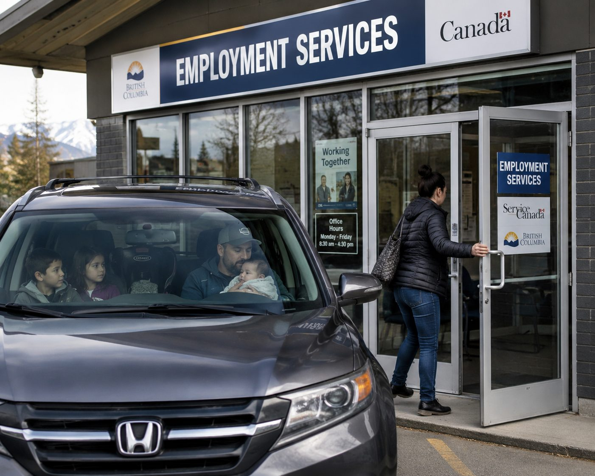

Chapter 1
[Chapter 1 title — to be confirmed]
A family of five: two young teens sitting in the SUV beside their father, who is comforting the baby, while their mother walks into an employment office. A quiet, dramatic portrait of the situation many automation-displaced families could find themselves in — without the Oasis structure there to change the outcome.
